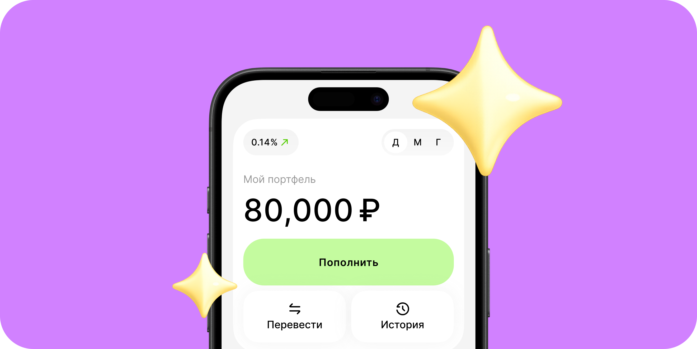
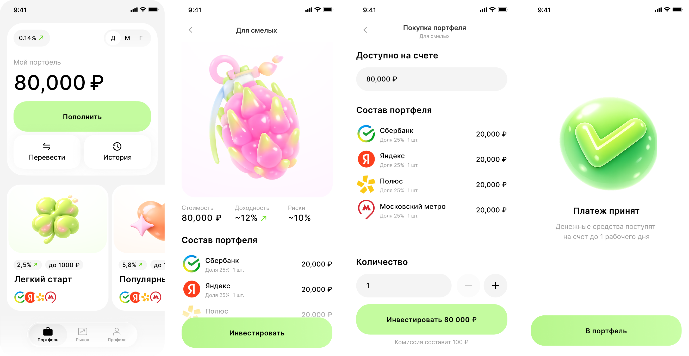
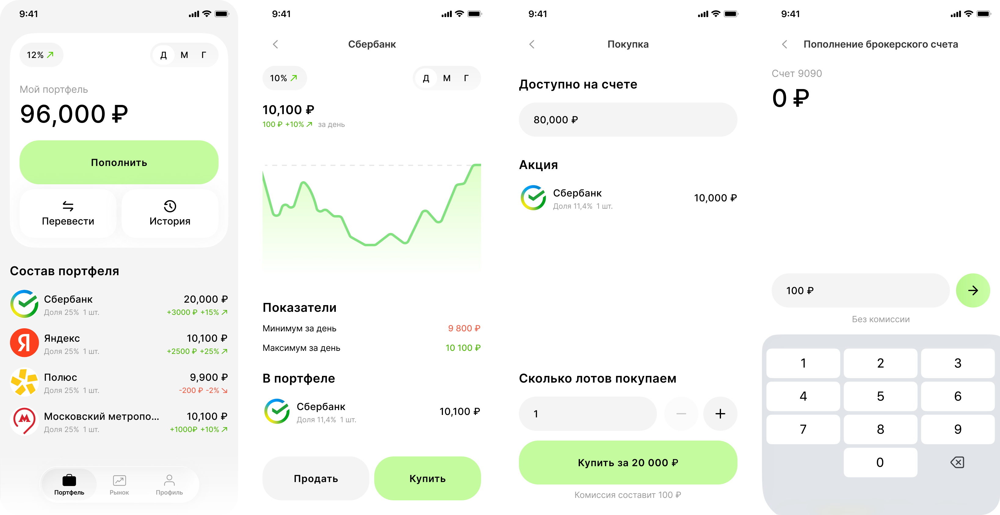
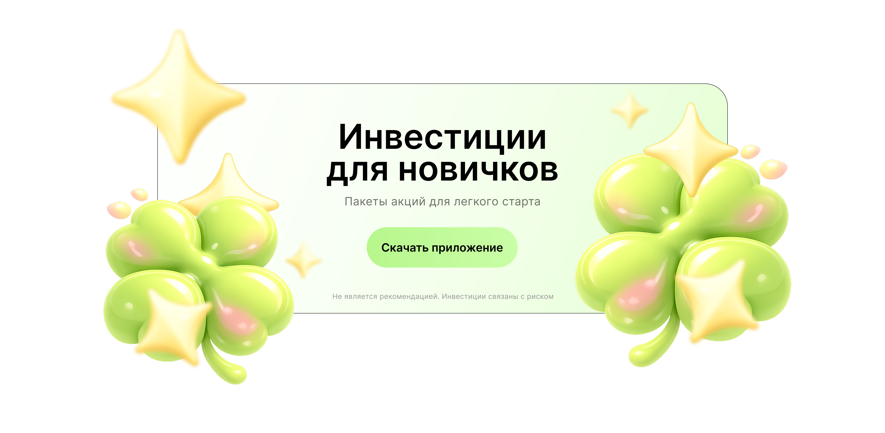

Легкий старт
Стартовый пакет с низким порогом входа поможет быстрее привести пользователя к первой инвестиции

Для компании нужно придумать концепт приложения с готовыми пакетами акций. Моя задача — спроектировать путь пользователя от возникновения потребности в такой рекомендации до продажи купленных активов
На этапе ресерча появилась первая гипотеза по точке входа: рекомендация внутри образовательного контента - прочитал, заинтересовался, перешел в приложение
Прошла путь от установки приложения до первой инвестиции по 10 конкурентам. Изучила поведение начинающих инвесторов, с какими трудностями они могут сталкиваться и что пугает больше всего
Проблемы пользователя:
Проблемы бизнеса:
Для новичков первый шаг в инвестиции связан с высоким порогом входа. По данным CFA Institute и FINRA, только 21% неинвестирующих миллениалов уверены в своих инвестиционных решениях, а 39% считают нехватку знаний барьером для входа. Исследование FCA дополняет это: менее опытные инвесторы плохо понимают риск, не доверяют себе в принятии решений и с трудом выбирают, каким источникам можно верить
CFA Institute + FINRA, 4 октября 2018
FCA, The motivations, needs and drivers of non- investors
Стартовый пакет с низким порогом входа поможет быстрее привести пользователя к первой инвестиции
Подборки или рекомендации от узнаваемого автора усилят доверие и желание попробовать
Пакет с более высоким риском и потенциалом доходности закроет потребность уверенных пользователей
После генерации гипотез и глубокого анализа рынка, я определила основные идеи пакетов акций, которые можно предложить пользователю:
Интерфейс сделала простым и дружелюбным, чтобы снизить стресс перед первой инвестицией. На главном экране пользователь видит счет, пополнение, быстрые действия и пакеты для старта, а в карточке — ключевые параметры для решения: стоимость, доходность, риск и комиссию

После покупки пользователь видит все акции в общем списке. Это упрощает управление портфелем, покупку и продажу активов, а график в реальном времени показывает динамику пакета. Купленный пакет исчезает с главной и переходит во вкладку Рынок, где его можно продать или докупить. Пополнение счета встроено через СБП

Когда визуальная концепция сложилась, точка входа тоже стала очевидной. Яркий эмоциональный баннер органично встраивается в образовательный контент и переводит пользователя в приложение уже на этапе первого интереса

Исследование показало, что новичков пугают не сами инвестиции, а страх ошибки, сложные термины и потеря контроля. Поэтому в концепте я сделала акцент на спокойном визуале, понятных сценариях и прозрачной коммуникации
Концепт решает несколько задач: